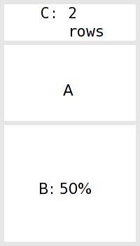
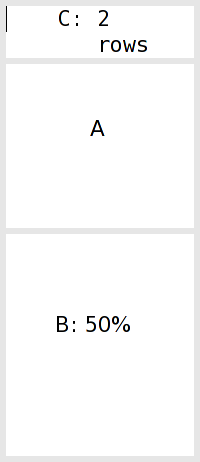
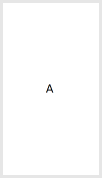
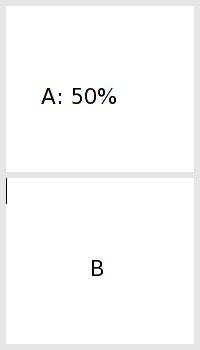
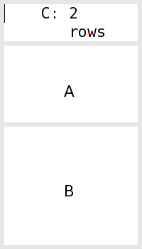
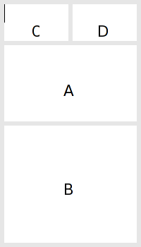
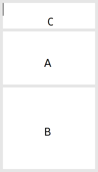
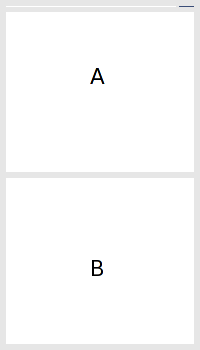

| Top |
Window Opening, Closing, and ConstraintsWindow Opening, Closing, and Constraints — Creating new windows and closing them |
| #define | winmethod_Left |
| #define | winmethod_Right |
| #define | winmethod_Above |
| #define | winmethod_Below |
| #define | winmethod_Fixed |
| #define | winmethod_Proportional |
| #define | winmethod_Border |
| #define | winmethod_NoBorder |
You can open a new window using glk_window_open() and close it again using
glk_window_close().
winid_t glk_window_open (winid_t split,glui32 method,glui32 size,glui32 wintype,glui32 rock);
Creates a new window. If there are no windows, the first three arguments are
meaningless. split
must be 0, and method
and size
are ignored. wintype
is the type of window you're creating, and rock
is
the rock (see Rocks).
If any windows exist, new windows must be created by splitting existing
ones. split
is the window you want to split; this must
not be zero. method
specifies the direction and the split method
(see below). size
is the size of the split. wintype
is the type of window
you're creating, and rock
is the rock.
The method argument must be the logical-or of a direction constant
(winmethod_Above, winmethod_Below, winmethod_Left, winmethod_Right) and a
split-method constant (winmethod_Fixed, winmethod_Proportional).
Remember that it is possible that the library will be unable to create a new
window, in which case glk_window_open() will return NULL.
It is acceptable to gracefully exit, if the window you are creating is an important one — such as your first window. But you should not try to perform any window operation on the id until you have tested to make sure it is non-zero.
The examples we've seen so far have the simplest kind of size control. (Yes, this is “below”.) Every pair is a percentage split, with X percent going to one side, and (100 - X) percent going to the other side. If the player resizes the window, the whole mess expands, contracts, or stretches in a uniform way.
As I said above, you can also make fixed-size splits. This is a little more complicated, because you have to know how this fixed size is measured.
Sizes are measured in a way which is different for each window type. For example, a text grid window is measured by the size of its fixed-width font. You can make a text grid window which is fixed at a height of four rows, or ten columns. A text buffer window is measured by the size of its font.
Remember that different windows may use different size fonts. Even two text grid windows may use fixed-size fonts of different sizes.
Graphics windows are measured in pixels, not characters. Blank windows aren't measured at all; there's no meaningful way to measure them, and therefore you can't create a blank window of a fixed size, only of a proportional (percentage) size.
So to create a text buffer window which takes the top 40% of the original window's space, you would execute
1 |
newwin = glk_window_open(win, winmethod_Above | winmethod_Proportional, 40, wintype_TextBuffer, 0); |
To create a text grid which is always five lines high, at the bottom of the original window, you would do
1 |
newwin = glk_window_open(win, winmethod_Below | winmethod_Fixed, 5, wintype_TextGrid, 0); |
Note that the meaning of the size
argument depends on the method
argument.
If the method is winmethod_Fixed, it also depends on the wintype
argument.
The new window is then called the “key window” of this split, because its
window type determines how the split size is computed.
For winmethod_Proportional splits, you can still call the new window the
“key window”.
But the key window is not important for proportional splits, because the
size will always be computed as a simple ratio of the available space, not
a fixed size of one child window.
This system is more or less peachy as long as all the constraints work out. What happens when there is a conflict? The rules are simple. Size control always flows down the tree, and the player is at the top. Let's bring out an example:
 |
O
/ \
O B
/ \
A C
|
First we split A into A and B, with a 50% proportional split. Then we split A into A and C, with C above, C being a text grid window, and C gets a fixed size of two rows (as measured in its own font size). A gets whatever remains of the 50% it had before.
Now the player stretches the window vertically.

The library figures: the topmost split, the original A/B split, is 50-50. So B gets half the screen space, and the pair window next to it (the lower “O”) gets the other half. Then it looks at the lower “O”. C gets two rows; A gets the rest. All done.
Then the user maliciously starts squeezing the window down, in stages:
The logic remains the same. B always gets half the space. At stage 3, there's no room left for A, so it winds up with zero height. Nothing displayed in A will be visible. At stage 4, there isn't even room in the upper 50% to give C its two rows; so it only gets one. Finally, C is squashed out of existence as well.
When a window winds up undersized, it remembers what size it should be. In the example above, A remembers that it should be two rows; if the user expands the window to the original size, it would return to the original layout.
The downward flow of control is a bit harsh. After all, in stage 4, there's room for C to have its two rows if only B would give up some of its 50%. But this does not happen.
This makes life much easier for the Glk library. To determine the configuration of a window, it only needs to look at the window's ancestors, never at its descendants. So window layout is a simple recursive algorithm, no backtracking.
What happens when you split a fixed-size window? The resulting pair window — that is, the two new parts together — retain the same size constraint as the original window that was split. The key window for the original split is still the key window for that split, even though it's now a grandchild instead of a child.
The easy, and correct, way to think about this is that the size constraint is stored by a window's parent, not the window itself; and a constraint consists of a pointer to a key window plus a size value.
 |
A |
 |
O1 / \ A B |
 |
O1
/ \
O2 B
/ \
A C
|
The initial window is A. After the first split, the new pair window (O1, which covers the whole screen) knows that its new child (B) is below A, and gets 50% of its own area. (B is the key window for this split, but a proportional split doesn't care about key windows.)
After the second split, all this remains true; O1 knows that its first child gets 50% of its space, and B is O1's key window. But now O1's first child is O2 instead of A. The newer pair window (O2) knows that its first child (C) is above the second, and gets a fixed size of two rows. (As measured in C's font, because C is O2's key window.)
If we split C, now, the resulting pair will still be two C-font rows high — that is, tall enough for two lines of whatever font C displays. For the sake of example, we'll do this vertically.
 |
O1
/ \
O2 B
/ \
A O3
/ \
C D
|
O3 now knows that its children have a 50-50 left-right split. O2 is still committed to giving its upper child, O3, two C-font rows. Again, this is because C is O2's key window.
This turns out to be a good idea, because it means that C, the text grid window, is still two rows high. If O3 had been a upper-lower split, things wouldn't work out so neatly. But the rules would still apply. If you don't like this, don't do it.
split |
The window to split to create the new window. Must be 0 if there are no windows yet. |
|
method |
Position of the new window and method of size computation. One of
|
|
size |
Size of the new window, in percentage points if |
|
wintype |
Type of the new window. One of |
|
rock |
The new window's rock value. |
void glk_window_close (winid_t win,stream_result_t *result);
Closes win
, which is pretty much exactly the opposite of opening a window.
It is legal to close all your windows, or to close the root window (which is
the same thing.)
The result
argument is filled with the output character count of the window
stream.
See Streams and Closing
Streams.
When you close a window (and it is not the root window), the other window in its pair takes over all the freed-up area. Let's close D, in the current example:
 |
O1
/ \
O2 B
/ \
A C
|
Notice what has happened. D is gone. O3 is gone, and its 50-50 left-right split has gone with it. The other size constraints are unchanged; O2 is still committed to giving its upper child two rows, as measured in the font of O2's key window, which is C. Conveniently, O2's upper child is C, just as it was before we created D. In fact, now that D is gone, everything is back to the way it was before we created D.
But what if we had closed C instead of D? We would have gotten this:
 |
O1
/ \
O2 B
/ \
A D
|
Again, O3 is gone. But D has collapsed to zero height. This is because its height is controlled by O2, and O2's key window was C, and C is now gone. O2 no longer has a key window at all, so it cannot compute a height for its upper child, so it defaults to zero.
This may seem to be an inconvenient choice. That is deliberate. You should
not leave a pair window with no key, and the zero-height default reminds
you not to. You can use glk_window_set_arrangement() to set a new split
measurement and key window. See Changing Window
Constraints.
win |
Window to close. |
|
result |
Pointer to a stream_result_t in which to store the write count. |
#define winmethod_Left (0x00)
When calling glk_window_open() with this method
, the new window will be
to the left of the old one which was split.
#define winmethod_Right (0x01)
When calling glk_window_open() with this method
, the new window will be
to the right of the old one which was split.
#define winmethod_Above (0x02)
When calling glk_window_open() with this method
, the new window will be
above the old one which was split.
#define winmethod_Below (0x03)
When calling glk_window_open() with this method
, the new window will be
below the old one which was split.
#define winmethod_Fixed (0x10)
When calling glk_window_open() with this method
, the new window will be
a fixed size. (See glk_window_open()).
#define winmethod_Proportional (0x20)
When calling glk_window_open() with this method
, the new window will be
a given proportion of the old window's size. (See glk_window_open()).
#define winmethod_Border (0x000)
When calling glk_window_open() with this method
, it specifies that there
should be a visible window border between the new window and its sibling.
(This is a hint to the library.)
#define winmethod_NoBorder (0x100)
When calling glk_window_open() with this method
, it specifies that there
should not be a visible window border between the new window and its sibling.
(This is a hint to the library; you might specify NoBorder between two
graphics windows that should form a single image.)